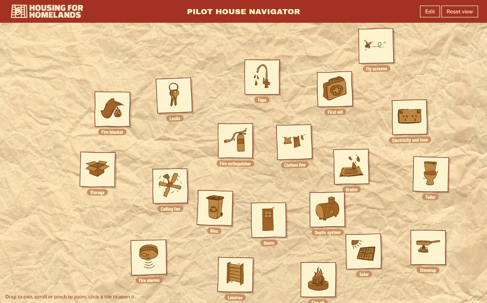
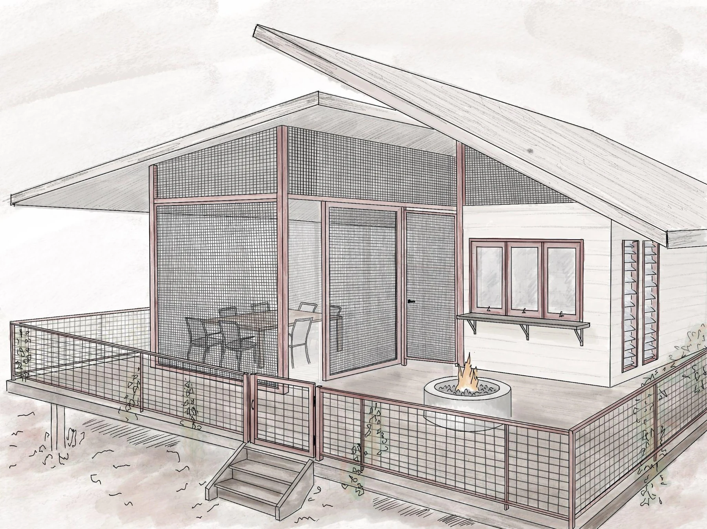
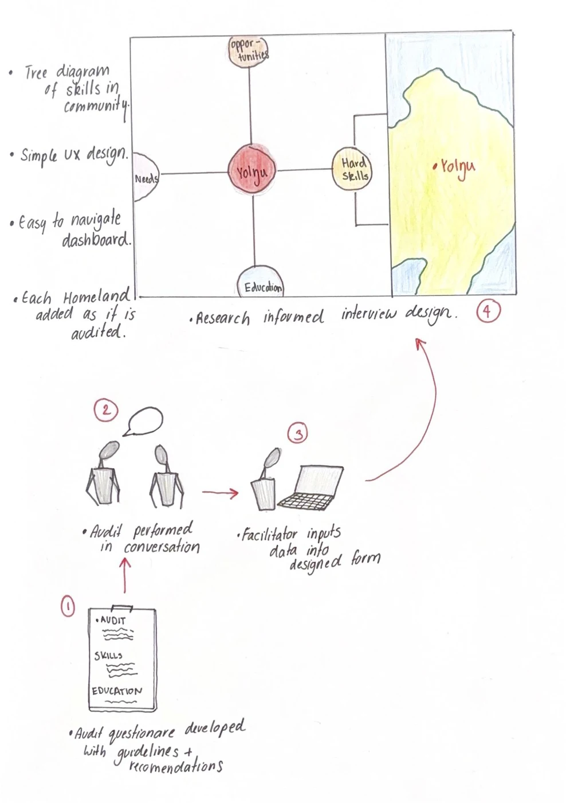
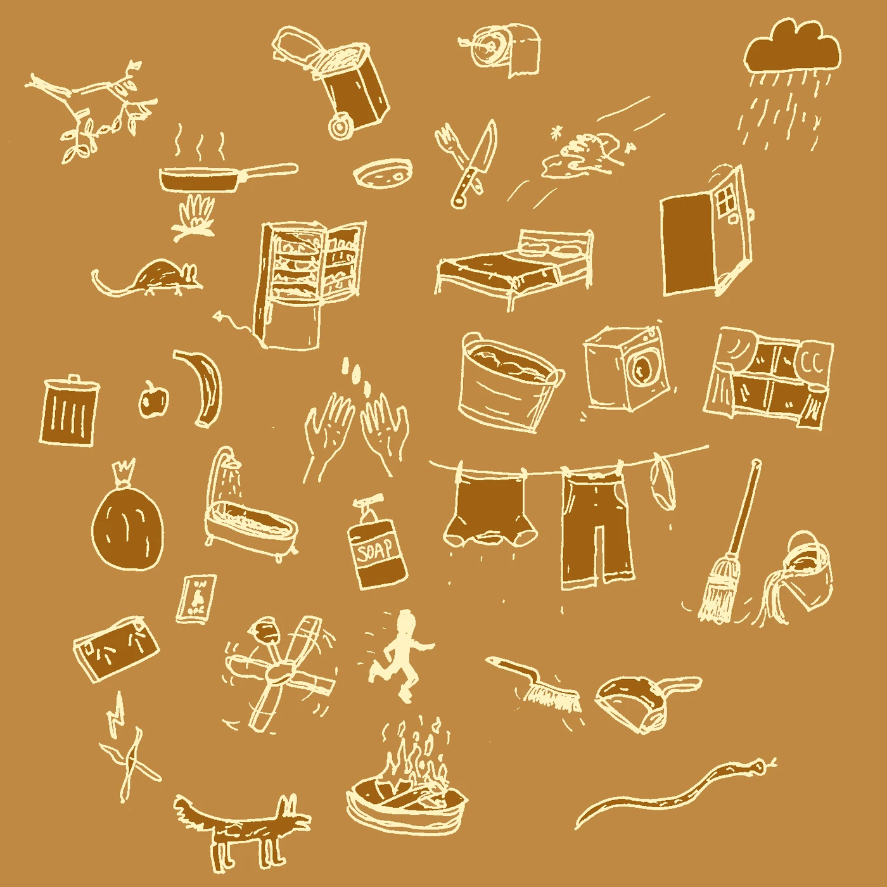
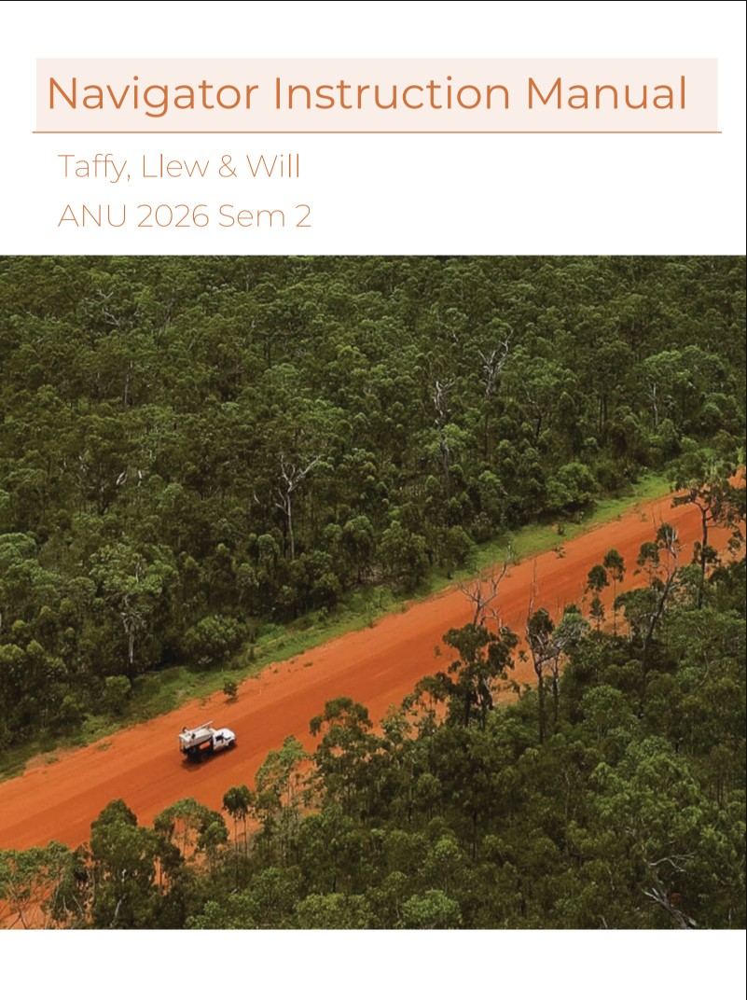
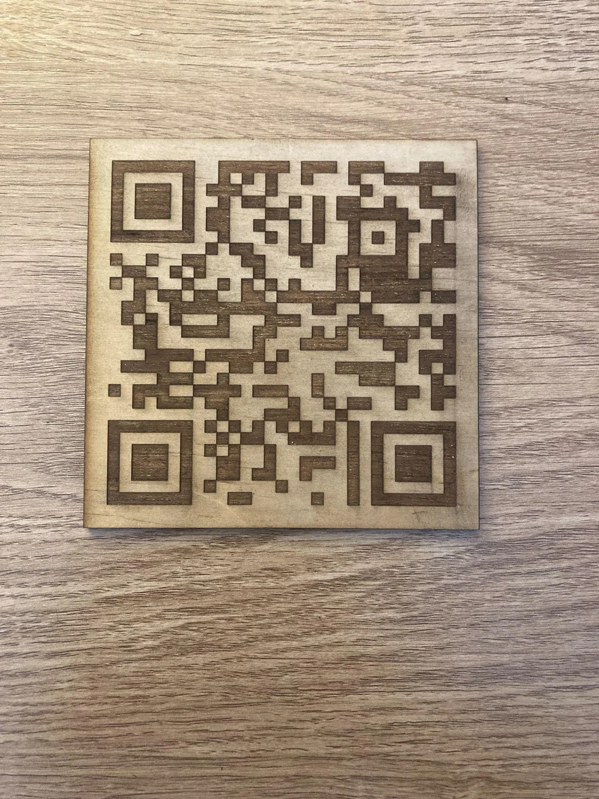
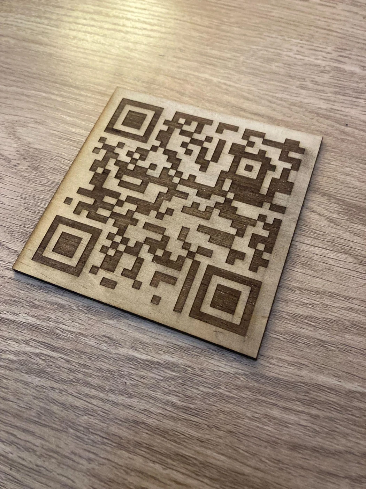

DIGITAL / 01
Pilot House
Navigator
- WORK
- Interactive house-information navigator and handover resources
- YEAR
- 2026 · Semester 2
- MEDIUM
- Digital interface, HTML, illustrated icons, laser-cut timber QR codes and instruction manual
- CONTEXT
- Group client project · ANU DESN3011 Major Design Capstone
- CLIENT
- Housing for Homelands · Chloe and Janos
- COLLABORATORS
- Taffany Mills-Hicks and Llewellyn Mitchell

Overview
Working with Housing for Homelands, our team developed the Pilot House Navigator, a digital resource intended to support the handover and everyday use of a proposed house in Ninydjiya, Northeast Arnhem Land. The project responds to the organisation's work with Yolŋu families living on their ancestral Country.
Rather than designing another physical object for the house, we made an accessible, editable information system. The Navigator uses illustrated icons to explain common household features and maintenance tasks, paired with an instruction manual for the Housing for Homelands team and laser-cut wooden QR codes intended to make information easy to reach from inside the home.
Design Brief
Our client, Housing for Homelands, was developing a pilot house in Ninydjiya with the aim of improving housing conditions while supporting community-led living on Country. Our brief was to create something useful for the house's transition into use and adaptable enough to inform future projects.
Designing from Canberra meant we had significant geographical and cultural distance from the people who would ultimately use the resource. We worked with Chloe and Janos from Housing for Homelands, reviewed the organisation's research and design principles, and carefully limited the scope to what could realistically be delivered in a 14-week semester.
The result needed to be practical, visually approachable and easy for Housing for Homelands to update as the house's final contents and community feedback became available.

Process
Our early ideas focused on physical improvements to the pilot house, including cooling, dust prevention and a maintenance or skills-audit toolkit. Once we learned the building's design was already substantially developed, we shifted away from construction solutions and focused instead on the handover stage.
We sketched non-linear visual maps and tested ways to organise household information. Inspired by the 8 Aboriginal Ways of Learning, the design favours images, symbols and spatial exploration rather than a long, prescriptive manual. Information for each item follows a consistent What, How, Why and Response structure in plain English, with scope for further adaptation and translation.

We drew on Housing for Homelands' existing earthy colour palette and produced illustrated household icons to keep the interface familiar, approachable and consistent with the organisation's identity. Alongside the digital navigator, we designed and laser-cut wooden QR markers intended to connect physical locations in the house to relevant information.

Outcome
We delivered an editable HTML Navigator, a step-by-step instruction manual and prototype laser-cut timber QR codes. The system was designed so that Housing for Homelands could update individual items and eventually make the resource accessible throughout the house.

SECOND FINAL DELIVERABLE
An editable handover
Alongside the Navigator, we prepared a practical manual that explains how Housing for Homelands can update household items, change icons, save versions and produce a view-only file for future use.
The manual supports ongoing changes as details of the pilot house and community feedback become available.


At the end of the capstone, the Navigator was a developed prototype, not yet a deployed community resource. Direct feedback from Yolŋu residents and final implementation remained important next steps for Housing for Homelands.
For me, the project was a lesson in narrowing a complex brief and making room for the people who would eventually use the design. The value of the Navigator lies not only in what our team built, but also in its ability to be revised as further needs and feedback emerge.